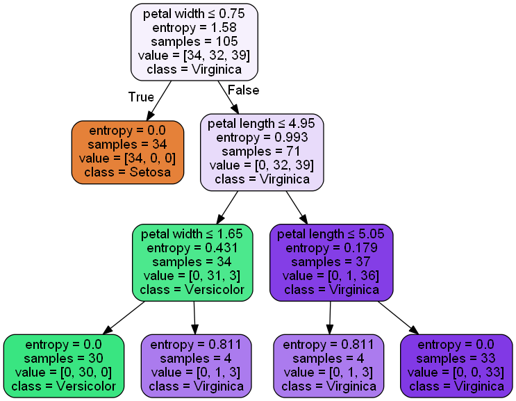
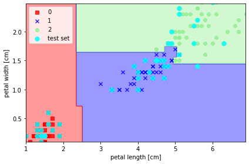
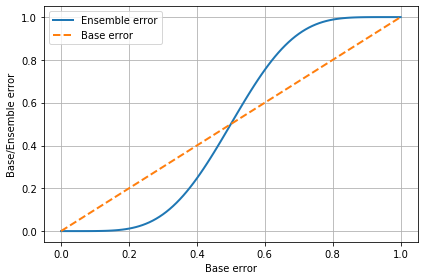
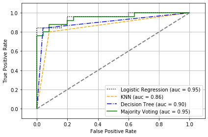

from matplotlib.colors import ListedColormap
def plot_decision_regions(X, y, classifiers, test_idx=None, resolution=0.02):
# setup marker generator and color map
markers = ('s', 'x', 'o', '^', 'v')
colors = ('red', 'blue', 'lightgreen', 'gray', 'cyan')
cmap = ListedColormap(colors[: len(np.unique(y))])
x1_min, x1_max = X[:,0].min(), X[:, 0].max()
x2_min, x2_max = X[:,1].min(), X[:, 1].max()
xx1, xx2 = np.meshgrid(np.arange(x1_min, x1_max, resolution),
np.arange(x2_min, x2_max,resolution))
Z = classifiers.predict(np.array([xx1.ravel(), xx2.ravel()]).T)
Z = Z.reshape(xx1.shape)
plt.contourf(xx1, xx2, Z, alpha=0.4, cmap=cmap)
plt.xlim(xx1.min(), xx1.max())
plt.ylim(xx2.min(), xx2.max())
## plot all samples
for idx, c in enumerate(np.unique(y)):
plt.scatter(x = X[y == c, 0], y = X[y==c, 1],
alpha = 0.8, c = cmap(idx),
marker = markers[idx],label = c)
# highlight test samples
if test_idx:
X_test, y_test = X[test_idx, :], y[test_idx]
plt.scatter(X_test[:, 0], X_test[:, 1], c='cyan',
alpha=0.8, linewidth=1, marker='o',
s=55, label='test set')
import numpy as np
from sklearn import datasets
from sklearn.model_selection import train_test_split
from sklearn.preprocessing import StandardScaler
iris = datasets.load_iris()
X = iris.data[:, [2, 3]]
y = iris.target ##0,1,2
X_train, X_test, y_train, y_test = train_test_split(
X, y, test_size=0.3, random_state=0)
sc = StandardScaler()
sc.fit(X_train)
X_train_std = sc.transform(X_train) # standardize by mean & std 是否需要标准化？
X_test_std = sc.transform(X_test)
## 利用sklearn拟合决策树分类模型
from sklearn.tree import DecisionTreeClassifier
import matplotlib.pyplot as plt
tree = DecisionTreeClassifier(criterion='entropy', max_depth=3, random_state=0)
tree.fit(X_train, y_train)
X_combined = np.vstack((X_train, X_test))
y_combined = np.hstack((y_train, y_test))
plot_decision_regions(X_combined, y_combined, tree, test_idx=range(105,150))
plt.xlabel('petal length [cm]')
plt.ylabel('petal width [cm]')
plt.legend(loc='upper left')
plt.tight_layout()
'c' argument looks like a single numeric RGB or RGBA sequence, which should be avoided as value-mapping will have precedence in case its length matches with 'x' & 'y'. Please use a 2-D array with a single row if you really want to specify the same RGB or RGBA value for all points.
'c' argument looks like a single numeric RGB or RGBA sequence, which should be avoided as value-mapping will have precedence in case its length matches with 'x' & 'y'. Please use a 2-D array with a single row if you really want to specify the same RGB or RGBA value for all points.
'c' argument looks like a single numeric RGB or RGBA sequence, which should be avoided as value-mapping will have precedence in case its length matches with 'x' & 'y'. Please use a 2-D array with a single row if you really want to specify the same RGB or RGBA value for all points.from sklearn.tree import export_graphviz
import pydotplus
from sklearn.externals.six import StringIO
from IPython.display import Image
dot_data = StringIO()
export_graphviz(tree, out_file=dot_data,
feature_names=['petal length', 'petal width'],
class_names=['Setosa','Versicolor','Virginica'],
filled=True, rounded=True,
special_characters=True)
graph = pydotplus.graph_from_dot_data(dot_data.getvalue())
Image(graph.create_png())
C:\Users\43790\Anaconda3\lib\site-packages\sklearn\externals\six.py:31: DeprecationWarning: The module is deprecated in version 0.21 and will be removed in version 0.23 since we've dropped support for Python 2.7. Please rely on the official version of six (https://pypi.org/project/six/).
"(https://pypi.org/project/six/).", DeprecationWarning)
## ex9_4 利用sklearn构建随机森林分类器
from sklearn.ensemble import RandomForestClassifier
# from 10 decision trees, n_jobs 值使用 cpu 个数
forest = RandomForestClassifier(criterion='entropy',
n_estimators=10,
random_state=1,
n_jobs=2)
forest.fit(X_train, y_train)
plot_decision_regions(X_combined, y_combined,
classifiers=forest, test_idx=range(105,150))
plt.xlabel('petal length [cm]')
plt.ylabel('petal width [cm]')
plt.legend(loc='upper left')
plt.tight_layout()
'c' argument looks like a single numeric RGB or RGBA sequence, which should be avoided as value-mapping will have precedence in case its length matches with 'x' & 'y'. Please use a 2-D array with a single row if you really want to specify the same RGB or RGBA value for all points.
'c' argument looks like a single numeric RGB or RGBA sequence, which should be avoided as value-mapping will have precedence in case its length matches with 'x' & 'y'. Please use a 2-D array with a single row if you really want to specify the same RGB or RGBA value for all points.
'c' argument looks like a single numeric RGB or RGBA sequence, which should be avoided as value-mapping will have precedence in case its length matches with 'x' & 'y'. Please use a 2-D array with a single row if you really want to specify the same RGB or RGBA value for all points.
import os
os.chdir(r"C:\Users\43790\data file")
from sklearn.ensemble import RandomForestRegressor
from sklearn.metrics import mean_squared_error,r2_score
import pandas as pd
import numpy as np
from sklearn.model_selection import train_test_split
from sklearn import linear_model
diabetes_X = pd.read_csv("diabetes_X.csv",header=None,sep=' ').values ##442*10
diabetes_y = pd.read_csv("diabetes_y.csv",header=None).values.flatten()
# 输入特征上拆分训练集和测试集
diabetes_X_train, diabetes_X_test, diabetes_y_train, diabetes_y_test = train_test_split(X, y, test_size=0.3, random_state=1)
forest = RandomForestRegressor(n_estimators=1000, criterion='mse', random_state=None, n_jobs=-1)
forest.fit(diabetes_X_train, diabetes_y_train)
diabetes_y_pred = forest.predict(diabetes_X_test)
print('RF Mean squared error: %.2f'
% mean_squared_error(diabetes_y_test, diabetes_y_pred))
print('RF Coefficient of determination: %.2f'
% r2_score(diabetes_y_test, diabetes_y_pred))
RF Mean squared error: 0.04
RF Coefficient of determination: 0.94#生成线性回归模型对象
regr = linear_model.LinearRegression()
## 训练模型
regr.fit(diabetes_X_train,diabetes_y_train)
##测试集上预测
diabetes_y_pred = regr.predict(diabetes_X_test)
# The mean squared error
print('LR Mean squared error: %.2f'
% mean_squared_error(diabetes_y_test, diabetes_y_pred))
# The coefficient of determination: 1 is perfect prediction
print('LR Coefficient of determination: %.2f'
% r2_score(diabetes_y_test, diabetes_y_pred))
LR Mean squared error: 0.05
LR Coefficient of determination: 0.92# #生成弹性网络
eNet = linear_model.ElasticNet()
## 训练模型
eNet.fit(diabetes_X_train,diabetes_y_train)
##测试集上预测
diabetes_y_pred = eNet.predict(diabetes_X_test)
# The mean squared error
print('eNet Mean squared error: %.2f'
% mean_squared_error(diabetes_y_test, diabetes_y_pred))
# The coefficient of determination: 1 is perfect prediction
print('eNet Coefficient of determination: %.2f'
% r2_score(diabetes_y_test, diabetes_y_pred))
eNet Mean squared error: 0.16
eNet Coefficient of determination: 0.73from scipy.special import comb
import math
import matplotlib.pyplot as plt
import numpy as np
# emsemble error rate
def ensemble_error(n_classifier, error):
k_start = int(math.ceil(n_classifier / 2.0))
probs = [comb(n_classifier, k) * error**k *
(1-error)**(n_classifier - k)
for k in range(k_start, n_classifier + 1)]
return sum(probs)
error_range = np.arange(0.0, 1.01, 0.01)
ens_errors = [ensemble_error(n_classifier=11, error=error)
for error in error_range]
plt.plot(error_range, ens_errors,
label='Ensemble error', linewidth=2)
plt.plot(error_range, error_range,
linestyle='--', label='Base error',linewidth=2)
plt.xlabel('Base error')
plt.ylabel('Base/Ensemble error')
plt.legend(loc='upper left')
plt.grid()
plt.tight_layout()

#在训练集上测试
from sklearn import datasets
from sklearn.model_selection import train_test_split
from sklearn.preprocessing import StandardScaler
from sklearn.preprocessing import LabelEncoder
# load iris data
iris = datasets.load_iris()
X, y = iris.data[50:, [1, 2]], iris.target[50:]
st = StandardScaler()
X = st.fit_transform(X)
le = LabelEncoder()
y = le.fit_transform(y)
# 50% train, 50% test
X_train, X_test, y_train, y_test = \
train_test_split(X, y, test_size=0.5, random_state=1, stratify=y)
from sklearn.linear_model import LogisticRegression
from sklearn.neighbors import KNeighborsClassifier
from sklearn.tree import DecisionTreeClassifier
from sklearn.model_selection import cross_val_score
clf1 = LogisticRegression(penalty='l2', C=0.01, random_state=1)
clf2 = KNeighborsClassifier(n_neighbors=1, p=2, metric='minkowski')
clf3 = DecisionTreeClassifier(max_depth=1, criterion='entropy', random_state=0)
clf_labels = ['Logistic Regression', 'KNN', 'Decision Tree']
all_clf = [clf1, clf2, clf3]
# print('10-fold cross validation:\n')
for clf_label, clf in zip(clf_labels, all_clf):
scores = cross_val_score(estimator=clf, X=X_train, y=y_train,
cv=10, scoring='roc_auc')
print("ROC AUC: %0.2f (+/- %0.2f) [%s]"
% (scores.mean(), scores.std(), clf_label))
## 加入投票机制
from sklearn.ensemble import VotingClassifier
mv_clf = VotingClassifier(
estimators=[('c1', clf1), ('c2', clf2), ('c3', clf3)], voting='soft')
clf_labels += ['Majority Voting']
all_clf += [mv_clf]
# print('10-fold cross validation:\n')
for clf_label, clf in zip(clf_labels, all_clf):
scores = cross_val_score(estimator=clf, X=X_train, y=y_train,
cv=10, scoring='roc_auc')
print("ROC AUC: %0.2f (+/- %0.2f) [%s]"
% (scores.mean(), scores.std(), clf_label))
C:\Users\43790\Anaconda3\lib\site-packages\sklearn\linear_model\logistic.py:432: FutureWarning: Default solver will be changed to 'lbfgs' in 0.22. Specify a solver to silence this warning.
FutureWarning)
C:\Users\43790\Anaconda3\lib\site-packages\sklearn\linear_model\logistic.py:432: FutureWarning: Default solver will be changed to 'lbfgs' in 0.22. Specify a solver to silence this warning.
FutureWarning)
C:\Users\43790\Anaconda3\lib\site-packages\sklearn\linear_model\logistic.py:432: FutureWarning: Default solver will be changed to 'lbfgs' in 0.22. Specify a solver to silence this warning.
FutureWarning)
C:\Users\43790\Anaconda3\lib\site-packages\sklearn\linear_model\logistic.py:432: FutureWarning: Default solver will be changed to 'lbfgs' in 0.22. Specify a solver to silence this warning.
FutureWarning)
C:\Users\43790\Anaconda3\lib\site-packages\sklearn\linear_model\logistic.py:432: FutureWarning: Default solver will be changed to 'lbfgs' in 0.22. Specify a solver to silence this warning.
FutureWarning)
C:\Users\43790\Anaconda3\lib\site-packages\sklearn\linear_model\logistic.py:432: FutureWarning: Default solver will be changed to 'lbfgs' in 0.22. Specify a solver to silence this warning.
FutureWarning)
C:\Users\43790\Anaconda3\lib\site-packages\sklearn\linear_model\logistic.py:432: FutureWarning: Default solver will be changed to 'lbfgs' in 0.22. Specify a solver to silence this warning.
FutureWarning)
C:\Users\43790\Anaconda3\lib\site-packages\sklearn\linear_model\logistic.py:432: FutureWarning: Default solver will be changed to 'lbfgs' in 0.22. Specify a solver to silence this warning.
FutureWarning)
C:\Users\43790\Anaconda3\lib\site-packages\sklearn\linear_model\logistic.py:432: FutureWarning: Default solver will be changed to 'lbfgs' in 0.22. Specify a solver to silence this warning.
FutureWarning)
C:\Users\43790\Anaconda3\lib\site-packages\sklearn\linear_model\logistic.py:432: FutureWarning: Default solver will be changed to 'lbfgs' in 0.22. Specify a solver to silence this warning.
FutureWarning)
ROC AUC: 0.89 (+/- 0.17) [Logistic Regression]
ROC AUC: 0.88 (+/- 0.15) [KNN]
ROC AUC: 0.89 (+/- 0.16) [Decision Tree]
ROC AUC: 0.89 (+/- 0.17) [Logistic Regression]
ROC AUC: 0.88 (+/- 0.15) [KNN]
ROC AUC: 0.89 (+/- 0.16) [Decision Tree]
ROC AUC: 0.96 (+/- 0.13) [Majority Voting]
C:\Users\43790\Anaconda3\lib\site-packages\sklearn\linear_model\logistic.py:432: FutureWarning: Default solver will be changed to 'lbfgs' in 0.22. Specify a solver to silence this warning.
FutureWarning)
C:\Users\43790\Anaconda3\lib\site-packages\sklearn\linear_model\logistic.py:432: FutureWarning: Default solver will be changed to 'lbfgs' in 0.22. Specify a solver to silence this warning.
FutureWarning)
C:\Users\43790\Anaconda3\lib\site-packages\sklearn\linear_model\logistic.py:432: FutureWarning: Default solver will be changed to 'lbfgs' in 0.22. Specify a solver to silence this warning.
FutureWarning)
C:\Users\43790\Anaconda3\lib\site-packages\sklearn\linear_model\logistic.py:432: FutureWarning: Default solver will be changed to 'lbfgs' in 0.22. Specify a solver to silence this warning.
FutureWarning)
C:\Users\43790\Anaconda3\lib\site-packages\sklearn\linear_model\logistic.py:432: FutureWarning: Default solver will be changed to 'lbfgs' in 0.22. Specify a solver to silence this warning.
FutureWarning)
C:\Users\43790\Anaconda3\lib\site-packages\sklearn\linear_model\logistic.py:432: FutureWarning: Default solver will be changed to 'lbfgs' in 0.22. Specify a solver to silence this warning.
FutureWarning)
C:\Users\43790\Anaconda3\lib\site-packages\sklearn\linear_model\logistic.py:432: FutureWarning: Default solver will be changed to 'lbfgs' in 0.22. Specify a solver to silence this warning.
FutureWarning)
C:\Users\43790\Anaconda3\lib\site-packages\sklearn\linear_model\logistic.py:432: FutureWarning: Default solver will be changed to 'lbfgs' in 0.22. Specify a solver to silence this warning.
FutureWarning)
C:\Users\43790\Anaconda3\lib\site-packages\sklearn\linear_model\logistic.py:432: FutureWarning: Default solver will be changed to 'lbfgs' in 0.22. Specify a solver to silence this warning.
FutureWarning)
C:\Users\43790\Anaconda3\lib\site-packages\sklearn\linear_model\logistic.py:432: FutureWarning: Default solver will be changed to 'lbfgs' in 0.22. Specify a solver to silence this warning.
FutureWarning)
C:\Users\43790\Anaconda3\lib\site-packages\sklearn\linear_model\logistic.py:432: FutureWarning: Default solver will be changed to 'lbfgs' in 0.22. Specify a solver to silence this warning.
FutureWarning)
C:\Users\43790\Anaconda3\lib\site-packages\sklearn\linear_model\logistic.py:432: FutureWarning: Default solver will be changed to 'lbfgs' in 0.22. Specify a solver to silence this warning.
FutureWarning)
C:\Users\43790\Anaconda3\lib\site-packages\sklearn\linear_model\logistic.py:432: FutureWarning: Default solver will be changed to 'lbfgs' in 0.22. Specify a solver to silence this warning.
FutureWarning)
C:\Users\43790\Anaconda3\lib\site-packages\sklearn\linear_model\logistic.py:432: FutureWarning: Default solver will be changed to 'lbfgs' in 0.22. Specify a solver to silence this warning.
FutureWarning)
C:\Users\43790\Anaconda3\lib\site-packages\sklearn\linear_model\logistic.py:432: FutureWarning: Default solver will be changed to 'lbfgs' in 0.22. Specify a solver to silence this warning.
FutureWarning)
C:\Users\43790\Anaconda3\lib\site-packages\sklearn\linear_model\logistic.py:432: FutureWarning: Default solver will be changed to 'lbfgs' in 0.22. Specify a solver to silence this warning.
FutureWarning)
C:\Users\43790\Anaconda3\lib\site-packages\sklearn\linear_model\logistic.py:432: FutureWarning: Default solver will be changed to 'lbfgs' in 0.22. Specify a solver to silence this warning.
FutureWarning)
C:\Users\43790\Anaconda3\lib\site-packages\sklearn\linear_model\logistic.py:432: FutureWarning: Default solver will be changed to 'lbfgs' in 0.22. Specify a solver to silence this warning.
FutureWarning)
C:\Users\43790\Anaconda3\lib\site-packages\sklearn\linear_model\logistic.py:432: FutureWarning: Default solver will be changed to 'lbfgs' in 0.22. Specify a solver to silence this warning.
FutureWarning)
C:\Users\43790\Anaconda3\lib\site-packages\sklearn\linear_model\logistic.py:432: FutureWarning: Default solver will be changed to 'lbfgs' in 0.22. Specify a solver to silence this warning.
FutureWarning)#在测试集上测试
from sklearn.metrics import roc_curve
from sklearn.metrics import auc
colors = ['black', 'orange', 'blue', 'green']
linestyles = [':', '--', '-.', '-']
for clf, label, clr, ls \
in zip(all_clf, clf_labels, colors, linestyles):
# assuming the label of the positive class is 1
y_pred = clf.fit(X_train, y_train).predict_proba(X_test)[:, 1]
fpr, tpr, thresholds = roc_curve(y_true=y_test,
y_score=y_pred)
roc_auc = auc(x=fpr, y=tpr)
plt.plot(fpr, tpr,
color=clr,
linestyle=ls,
label='%s (auc = %0.2f)' % (label, roc_auc))
plt.legend(loc='lower right')
plt.plot([0, 1], [0, 1],
linestyle='--',
color='gray',
linewidth=2)
plt.xlim([-0.1, 1.1])
plt.ylim([-0.1, 1.1])
plt.grid()
plt.xlabel('False Positive Rate')
plt.ylabel('True Positive Rate')
plt.tight_layout()
C:\Users\43790\Anaconda3\lib\site-packages\sklearn\linear_model\logistic.py:432: FutureWarning: Default solver will be changed to 'lbfgs' in 0.22. Specify a solver to silence this warning.
FutureWarning)
C:\Users\43790\Anaconda3\lib\site-packages\sklearn\linear_model\logistic.py:432: FutureWarning: Default solver will be changed to 'lbfgs' in 0.22. Specify a solver to silence this warning.
FutureWarning)
## ex10_5 在wine.data数据集上构建套袋模型
import os
import math
import pandas as pd
os.chdir(r"C:\Users\43790\data file")
df = pd.read_csv("wine.data",header=None)
df.columns = ['Class label', 'Alcohol', 'Malic acid', 'Ash',
'Alcalinity of ash', 'Magnesium', 'Total phenols',
'Flavanoids', 'Nonflavanoid phenols', 'Proanthocyanins',
'Color intensity', 'Hue', 'OD280/OD315 of diluted wines', 'Proline']
# df.head()
# only consider Wine classes 2 and 3
df = df[df['Class label'] != 1]
y = df['Class label'].values
X = df[['Alcohol', 'Hue']].values
## 拆分训练集和测试集
from sklearn.preprocessing import LabelEncoder
from sklearn.model_selection import train_test_split
# 转换 label
le = LabelEncoder()
y = le.fit_transform(y)
# 60% train, 40% test
X_train, X_test, y_train, y_test = \
train_test_split(X, y, test_size=0.40, random_state=1, stratify=y)
# sklearn 提供的 BaggingClassifier， 其实功能已经超过 Bagging 了
# 它既能对 samples 采样，也能对 features 采样
from sklearn.ensemble import BaggingClassifier
from sklearn.tree import DecisionTreeClassifier
tree = DecisionTreeClassifier(criterion='entropy',
random_state=1,
max_depth=None)
# 用 Decision Tree 作 base
bag = BaggingClassifier(base_estimator=tree,
n_estimators=500,
max_samples=1.0, # 子采样 samples 的比例
max_features=1.0, # 子采样 features 的比例
bootstrap=True, # 采样 samples 时是否使用 bootstrap
bootstrap_features=False, # 采样 features 时是否使用 bootstrap
random_state=1)
## 计算决策树好套袋分类器在训练集和测试集上的预测准确率，比较性能
from sklearn.metrics import accuracy_score
tree = tree.fit(X_train, y_train)
y_train_pred = tree.predict(X_train)
y_test_pred = tree.predict(X_test)
tree_train = accuracy_score(y_train, y_train_pred)
tree_test = accuracy_score(y_test, y_test_pred)
print('Decision tree train/test accuracies %.3f/%.3f'
% (tree_train, tree_test))
bag = bag.fit(X_train, y_train)
y_train_pred = bag.predict(X_train)
y_test_pred = bag.predict(X_test)
bag_train = accuracy_score(y_train, y_train_pred)
bag_test = accuracy_score(y_test, y_test_pred)
print('Bagging train/test accuracies %.3f/%.3f'
% (bag_train, bag_test))
Decision tree train/test accuracies 1.000/0.875
Bagging train/test accuracies 1.000/0.896#使用sklearn实现Adaboost
from sklearn.ensemble import AdaBoostClassifier
tree = DecisionTreeClassifier(criterion='entropy',
random_state=1,
max_depth=1)
ada = AdaBoostClassifier(base_estimator=tree,
n_estimators=500,
learning_rate=0.1,
random_state=1)
tree = tree.fit(X_train, y_train)
y_train_pred = tree.predict(X_train)
y_test_pred = tree.predict(X_test)
tree_train = accuracy_score(y_train, y_train_pred)
tree_test = accuracy_score(y_test, y_test_pred)
print('Decision tree train/test accuracies %.3f/%.3f'
% (tree_train, tree_test))
ada = ada.fit(X_train, y_train)
y_train_pred = ada.predict(X_train)
y_test_pred = ada.predict(X_test)
ada_train = accuracy_score(y_train, y_train_pred)
ada_test = accuracy_score(y_test, y_test_pred)
print('AdaBoost train/test accuracies %.3f/%.3f'
% (ada_train, ada_test))
Decision tree train/test accuracies 0.887/0.896
AdaBoost train/test accuracies 1.000/0.938